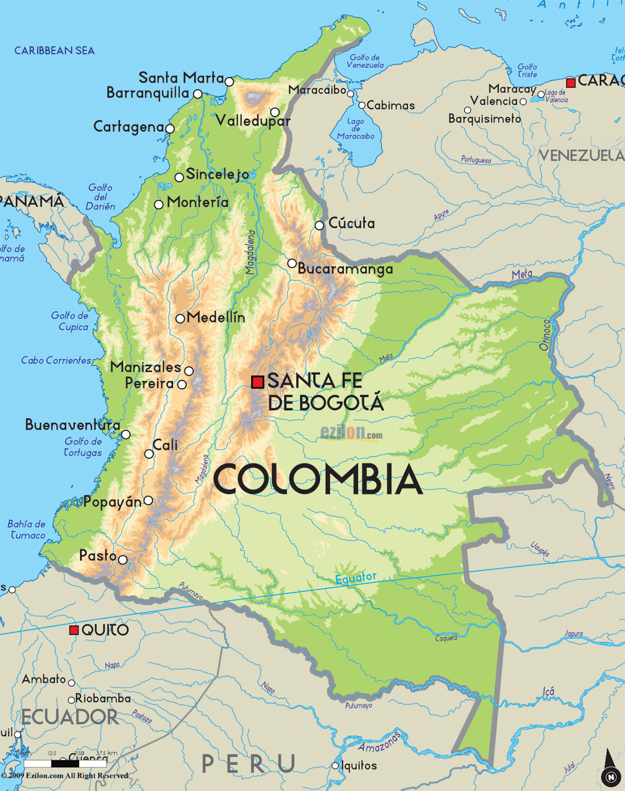

Colombia
Mi país, mi territorio

Objetivo General
Fortalecer la comprensión de la organización territorial de Colombia y las particularidades geográficas de sus regiones, así como las ventajas de su posición geográfica y astronómica para la economía nacional, mediante el uso de tecnologías digitales y el desarrollo de las inteligencias espacial y naturalista.
Competencia
Comprende las ventajas que tiene para Colombia su posición geográfica y astronómica en relación con la economía nacional.
Objetivo de la sesión
Analizar cómo el relieve colombiano, en sus zonas altas y bajas, influye en las actividades económicas del país, mediante el uso de mapas digitales y el reconocimiento de paisajes naturales, fortaleciendo la comprensión de la relación entre el entorno físico y la economía nacional
Secuencia didáctica
AUTOR: FAIBER CUELLAR PORTELA
NOTA ACLARATORIA: El Recurso Educativo Digital fue desarrollado por el autor Faiber Cuellar, quien tomó como base la plantilla diseñada por los autores Balam Rivero Arely Gpe, Blas Rosado Maria De Jesus y Lara Baas Pamela, sin embargo, las actividades y contenidos que aparecen en este recurso, son distintos a los propuestos por los autores originalmente.